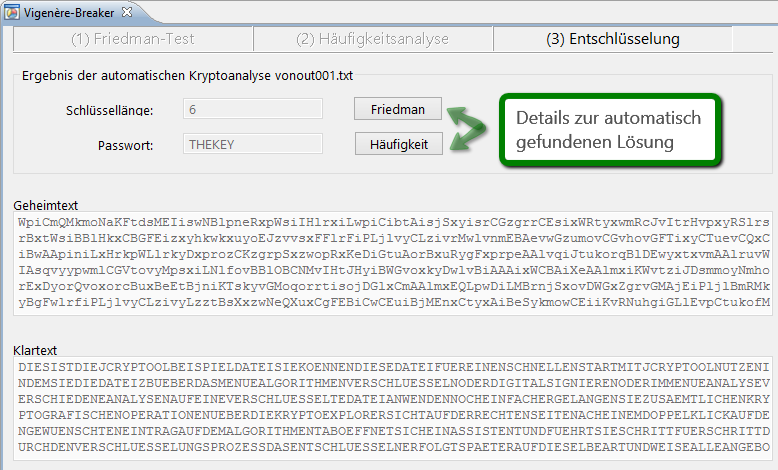
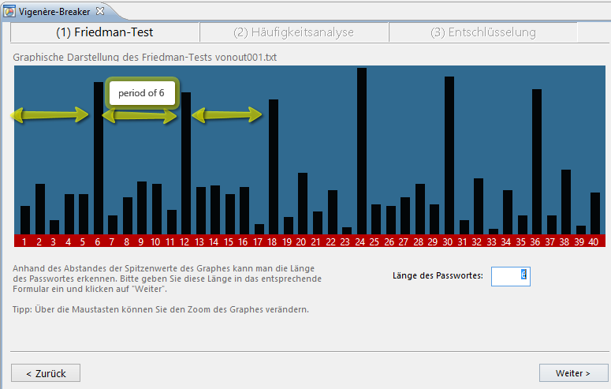
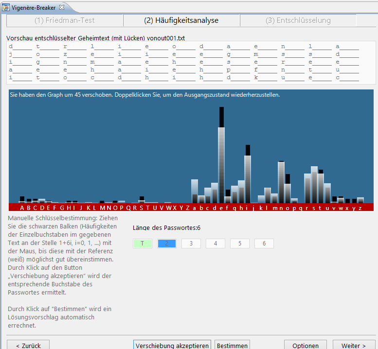

Im Vigenère-Breaker können Sie manuell oder vollautomatisch eine Vigenère-verschlüsselte Chiffre entschlüsseln.
Wählen Sie im ersten Bildschirm aus, ob Sie die "Automatische Analyse" oder die "Manuelle Analyse" bevorzugen:

Bei der vollständigen Analyse wird Ihnen gleich das Ergebnis angezeigt. Sie können sich die automatisch ausgeführten Zwischenschritte jedoch ansehen, indem Sie auf die Buttons neben deren Anzeigen klicken ("Friedman"/"Häufigkeit"):

Diese einzelnen Schritte können Sie im manuellen Modus selbst nachvollziehen. Sie müssen dazu durch Anwendung des Friedman-Tests und der darauf basierenden Häufigkeitsanalyse Schlüssellänge und -inhalt ermitteln. Diese Schritte sind:
Beim Friedman-Test wird der Text gegen sich selbst verschoben und auf Übereinstimmungen getestet. Bei einer Vigenère-Verschlüsselung mit einem Schlüssel der Länge n treten im angezeigten Graphen periodische Spitzen auf (z. B. mit Schlüssel = "TEST" => n=4 kann man im Graphen bei 4, 8, 12, 16 usw. Spitzen sehen). Haben Sie diese Periode gefunden, haben Sie auch die Schlüssellänge gefunden, und tragen sie in das Eingabefeld ein.
Da wir nun die Schlüssellänge ermittelt haben, können wir mit Häufigkeitsanalysen die einzelnen Buchstaben des Schlüssels ermitteln.
Das Diagramm zeigt Ihnen die Auftretenshäufigkeit der einzelnen Buchstaben im Text. Sie müssen durch Verschieben des Graphen (Drag 'n Drop) eine möglichst gute Deckung zwischen Referenzverteilung (weiß) und der tatsächlichen Verteilung (schwarz) herstellen. Damit ermitteln Sie, um welchen Wert bei der Verschlüsselung verschoben wurde, und damit auch den korrekten Buchstaben des Schlüssels an der aktuellen Stelle.
Auf diesen Buchstaben legen Sie sich fest mit "Verschiebung akzeptieren". Es wird automatisch zur nächsten Schlüsselposition gewechselt. Es ist auch möglich, sich eine automatisch ermittelte Lösung mit dem "Bestimmen"-Button anzeigen zu lassen.
Sind alle Positionen des Schlüssels ermittelt, so ist die Chiffre gebrochen. Sie können mit "Weiter" zum
Zusammenfassungsbildschirm gelangen.